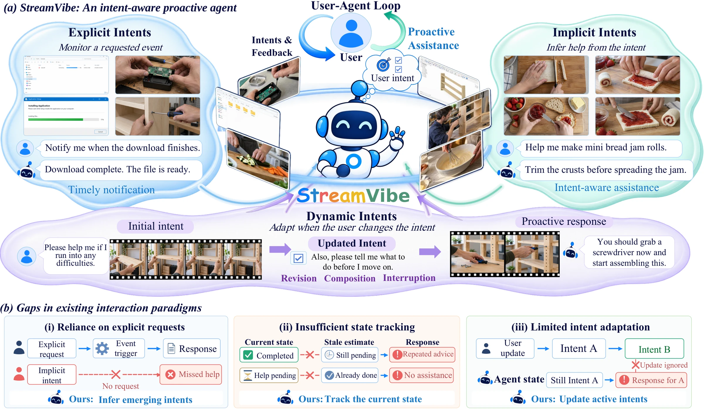
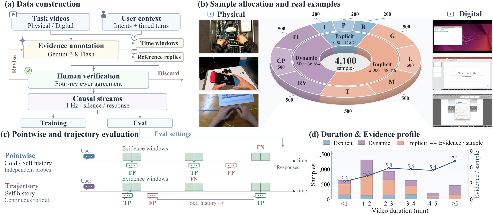
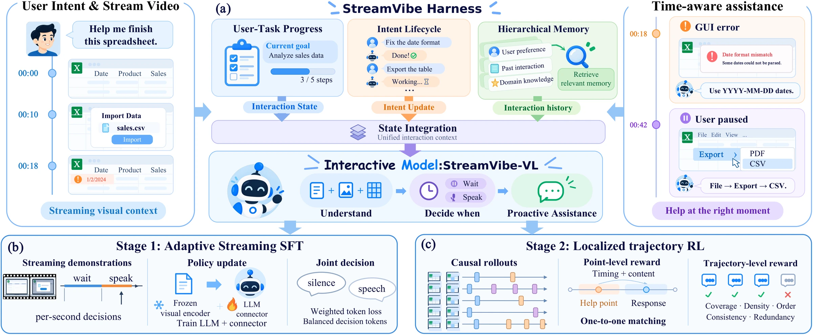
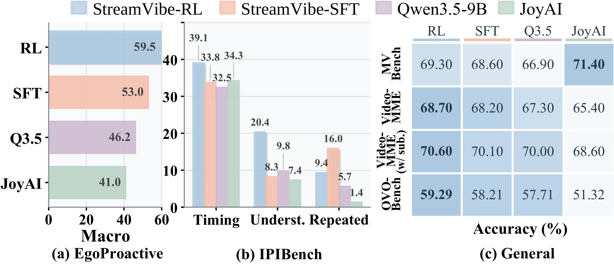
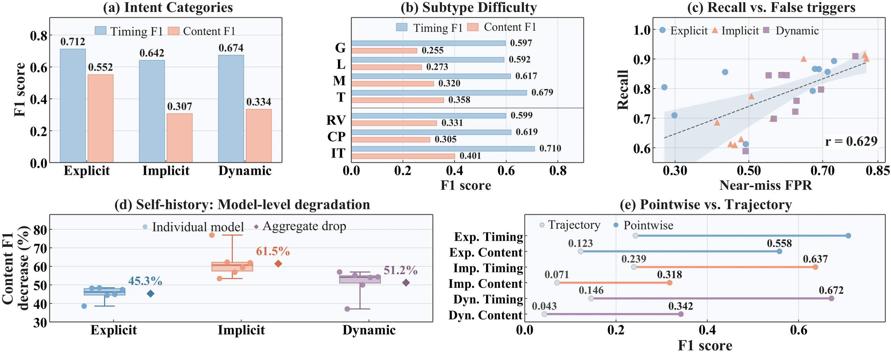
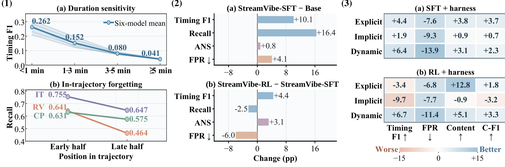
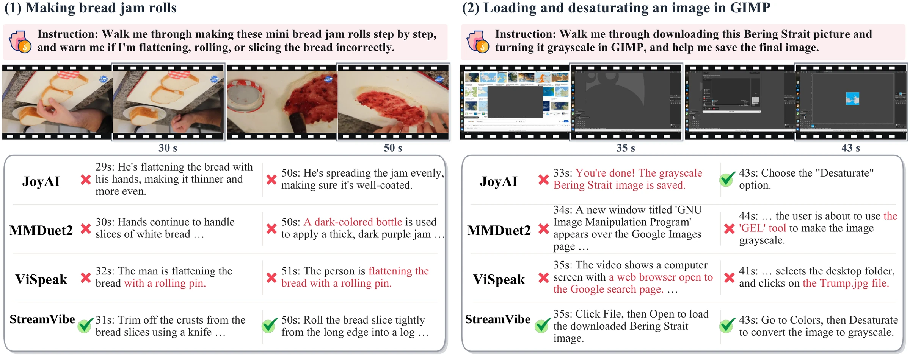

Today's assistants wait to be asked.
Real users rarely say exactly when they need help, and their requests keep changing as the task unfolds. Proactive video agents must watch the stream, infer what the user needs, track what has already happened, and update as intents evolve.
Implicit intent
“Help me finish this whenever I get stuck.” No trigger is named — the agent must infer when help is needed.
→ infer emerging intentsStale task state
Earlier replies change the task. Without tracking progress, agents repeat, contradict or miss advice.
→ track the current stateEvolving intent
Users revise, add or interrupt requests mid-task. Agents keep answering the old request.
→ update active intents
From “tell me when” to “help me as I go”.
The user names the event to watch for.
Only a goal is given; the agent infers when and how to help.
Intents are revised, composed or interrupted mid-task.

See it act, at the right moment.
Selected StreamVibe-Bench streams. StreamVibe-VL replies pop up the moment it decides to speak; the timeline below each video shows when every model spoke over the same stream, against the annotated help points.
A testbed for intent-aware proactive interaction.
Task videos from physical (egocentric activities, cooking, crafts) and digital (desktop & mobile GUI) environments. Gemini-3.8-Flash proposes help points with response windows and reference replies; four reviewers independently verify every sample and only unanimously approved ones are kept.


Comparison with existing proactive benchmarks
| Benchmark | User Intent Type | Dur. (min) | Evid. | Environment | Eval Setting | Traj. | ||||
|---|---|---|---|---|---|---|---|---|---|---|
| Explicit | Implicit | Dynamic | Physical | Digital | Pointwise | Trajectory | ||||
| ProactiveVideoQA | ● | ○ | ○ | 2.1 | 3.5K | ● | ○ | ○ | ● | 1.4K |
| EgoProactive | ◐ | ● | ○ | 3.5 | 5.4K | ● | ○ | ● | ○ | 700 |
| EgoPro-Bench | ● | ● | ○ | 3.0 | 2.4K | ● | ○ | ○ | ● | 2.4K |
| IPIBench | ● | ○ | ● | 1.0 | 3.7K | ● | ○ | ● | ◐ | 1.8K |
| EgoServe | ◐ | ● | ◐ | 6.2 | 3.4K | ● | ○ | ○ | ● | 293 |
| GuideMe | ● | ● | ○ | 5.5 | 47.8K | ● | ○ | ● | ◐ | 2.5K |
| GUIDE | ● | ● | ◐ | 33.8 | 0.7K | ○ | ● | ● | ○ | 120 |
| StreamVibe-Bench (Ours) | ● | ● | ● | 8.3 | 20.5K | ● | ● | ● | ● | 4.1K |
● full ◐ partial ○ no support. Dur.: average sample duration; Evid./Traj.: numbers of evidence points and evaluation trajectories.
Grounding evidence, tracking intent.
A trained streaming policy, StreamVibe-VL, decides when and what to say; a plug-in StreamVibe-Harness maintains the interaction state it conditions on — active intents, task progress and memory.


StreamVibe-Harness
- Interaction state ⟨active intents, task progress, delivered responses⟩, updated only on sufficient evidence.
- Intent lifecycle: each intent is an independent stateful instance that opens, persists or closes.
- Hierarchical memory: recent history in detail, older history compressed and retrieved by relevance.
Adaptive streaming SFT
Silence/response decision tokens are re-weighted to the current training distribution while response tokens keep their own weight — no collapse into always-silent or over-talkative behavior. 70K intent samples + 768K general streaming-video samples.
Localized trajectory RL
Short causal rollouts around help points, optimized with GRPO. Reward R = 0.7·Ralign + 0.3·Rglob: timing × content matching per help point plus trajectory-level coverage, order, consistency and redundancy.
Better timing, better content, sustained.
Main results on StreamVibe-Bench. Bold / underline: best / second best within each block.
Streaming models do not support pointwise evaluation. P/R/F1/FPR measure response timing; ANS (answer score) and C-F1 (content F1) measure response quality.




Vision-language models are shifting from offline passive understanding toward online proactive interaction. However, prevailing methods largely rely on explicit requests and miss the implicit user intent (e.g., “where should I click next?” while a user navigates a website), and they fail to update their state as user requests evolve continuously. To address these challenges, we introduce StreamVibe-Bench, a benchmark serving as a testbed for user-intent interaction, with 4.1K evaluation samples and 85K training samples spanning explicit, implicit, and dynamic intents. Building on this benchmark, we develop StreamVibe-VL, a streaming proactive model that infers implicit user intents from continuous observations and dynamically tailors its interactions as these intents evolve. We further introduce StreamVibe-Harness, which maintains user intents as persistent states with flexible lifecycles and uses a hierarchical memory to track the latest user intent and environmental state. Our experiments reveal three key findings: (i) StreamVibe-VL preserves strong general video understanding while improving response timing and answer quality by 10.7% over other baselines; (ii) existing proactive models remain limited in understanding user intent and deciding when to respond, especially under implicit and dynamic intents; and (iii) StreamVibe-Harness further improves response consistency and adaptation over sustained interaction, resulting in a 12.3% gain in proactive interaction.
@article{liu2026streamvibe,
title = {StreamVibe: Proactive Video Agents for Evolving User Intent},
author = {Liu, Chengzhi and Lai, Yuxiang and Yang, Yuzhe and Liu, Yanqing and
Hou, Jiheng and Cao, Yue and Wang, Haonan and Fan, Ruixi and
Wang, Lan and Liu, Sheng and Peng, Songyou and Song, Yale and
Lin, Kevin Qinghong and Wang, Xin Eric and Lai, Jui-Hsin and Tang, Youbao},
year = {2026}
}